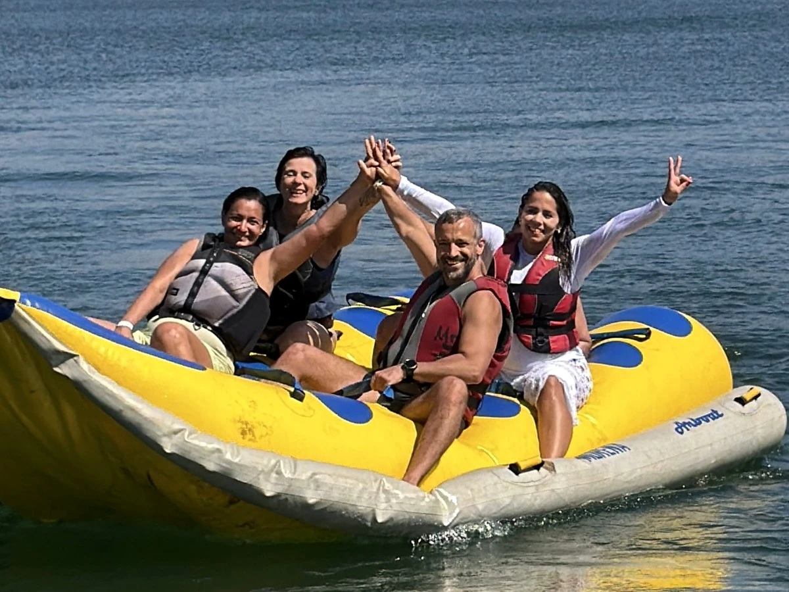
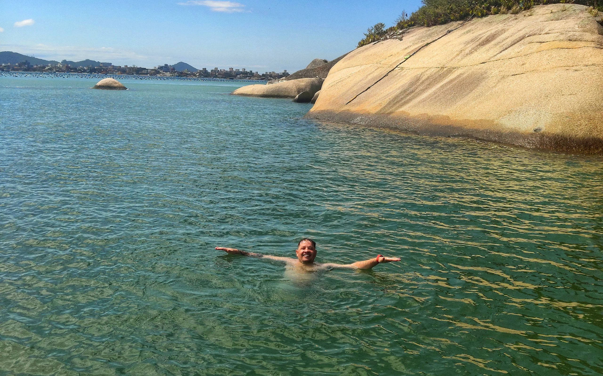
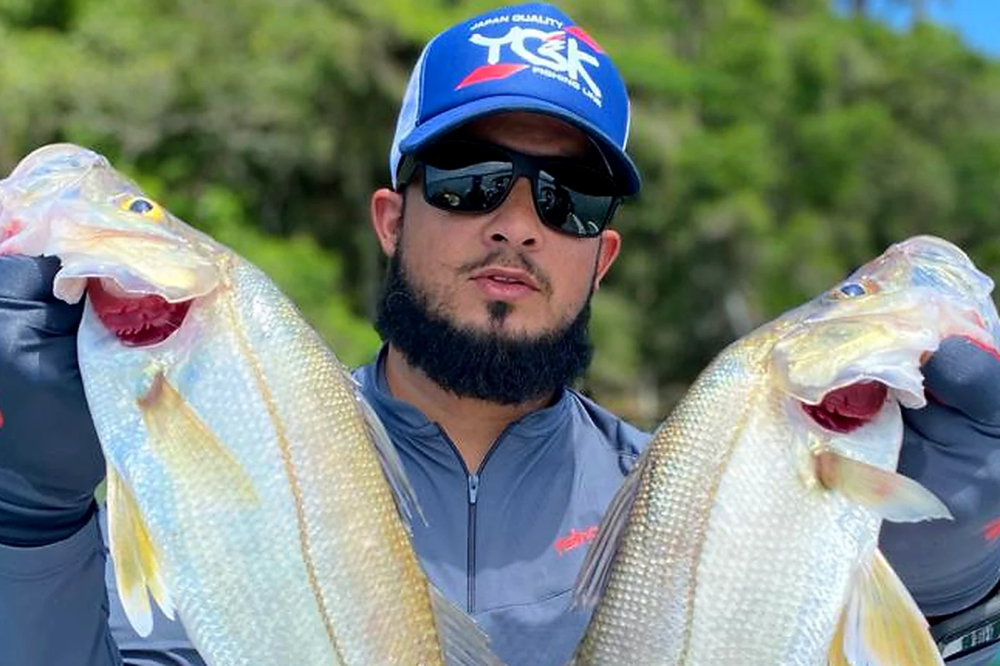
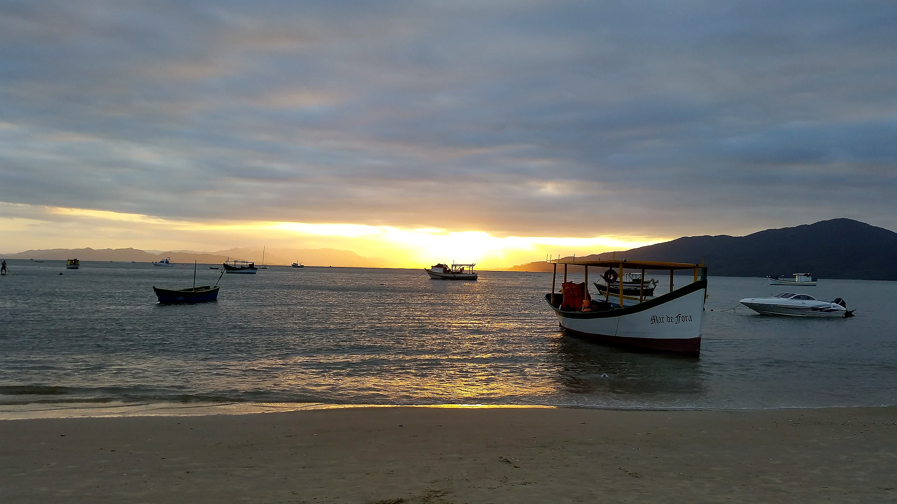

Emoção em Grupo
Passeio de Banana Boat
Adrenalina e boas risadas pela baía de Garopaba. Condução segura com marinheiro experiente e ritmo ajustado para famílias ou turmas de amigos.

Passeios de Banana Boat, aluguel de Pedalinhos e Caiaques nas águas mansas do Centro Histórico e Rancho de Pescadores. Coletes salva-vidas inclusos para toda a família.
Saídas direto da areia da Praia Central de Garopaba, ao lado do Rancho de Pescadores, onde o mar forma uma piscina natural.

Adrenalina e boas risadas pela baía de Garopaba. Condução segura com marinheiro experiente e ritmo ajustado para famílias ou turmas de amigos.

Remada leve pelas águas transparentes do canto sul, contornando os barcos coloridos e a paisagem do Centro Histórico de Garopaba.

O clássico das férias em Garopaba: passeio estável e tranquilo sobre o mar calmo, perfeito para crianças, casais e fotos da orla.

Vai com a família inteira ou excursão? Combine Banana Boat + Caiaques e Pedalinhos com atendimento direto com o Edmundo.

Tradição em Garopaba Segurança e Coletes Inclusos
Segurança e Coletes Inclusos
Estamos no trecho mais abrigado da Praia de Garopaba, onde as águas são calmas e sem ondulação forte.
Nossa equipe entrega os coletes certos para cada idade, ajusta os remos e passa todas as dicas antes da saída.
Curta o Banana Boat com a turma ou navegue no seu ritmo de caiaque e pedalinho vendo o Centro Histórico pelo mar.
Caiaques individuais e duplos
Pedalinhos para famílias e crianças

Final de tarde no Centro Histórico“O ponto ali perto do Centro Histórico é perfeito para ir com crianças porque não tem onda forte. Alugamos pedalinho e caiaque, equipamentos bem cuidados e atendimento nota dez.”
“O passeio de Banana Boat com a turma foi o ponto alto do nosso fim de semana em Garopaba! Muito divertido, seguro e com uma vista linda de toda a orla.”
“Remar de caiaque cedinho vendo as casinhas do Centro Histórico e os barcos dos pescadores não tem preço. Recomendo demais chamar o Edmundo!”
Escolha a atividade abaixo e mande mensagem pronta para consultar valores, condições do mar e reservar para sua turma.
Ficamos na areia da Praia Central de Garopaba, no canto sul (região do Centro Histórico e do Rancho de Pescadores), onde o mar é mais abrigado e calmo.
Sim! Temos coletes salva-vidas infantis e adultos inclusos em todas as atividades, e navegamos na área de águas mansas da enseada central.
Trabalhamos com locação por tempo nos caiaques e pedalinhos e saídas por pessoa ou grupo no Banana Boat. Chame no WhatsApp (48) 99965-5708 para consultar na hora.
Para grupos maiores e passeios de Banana Boat no verão ou finais de semana, recomendamos mandar um WhatsApp antes para garantir o melhor horário da sua turma.